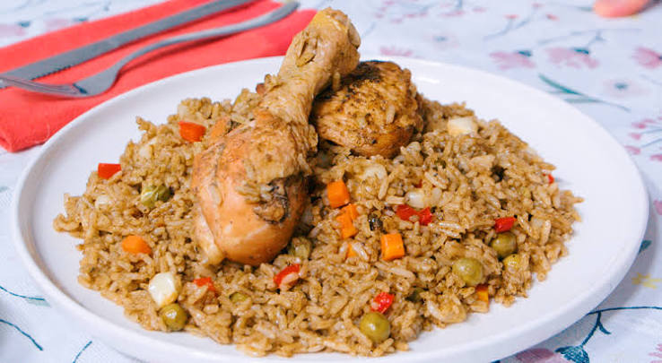

ARROZ CON POLLO
Home

Descripción
El arroz con pollo es un plato tradicional y muy querido que combina arroz graneado, presas de pollo tiernas y un vibrante aderezo verde de culantro, acompañado de verduras frescas como zanahorias, arvejas y choclo
Es originario de Perú y es una alternativa del arroz con pato, la cual es mucho mas económica sin dejar de lado el sabor y la alta calidad en su preparación.
Ingredients
Carnes y base
- 4 a 5 presas de pollo (piernas o encuentro)
- 3 tazas de arroz blanco
- 3 tazas de caldo de pollo o agua
Verduras y hierbas
- 1 cebolla roja grande picada en cuadritos
- 1 cucharada de ajo molido
- 3 a 4 cucharadas de ají amarillo molido
- 3/4 de taza de culantro (cilantro) licuado
- 1/2 taza de arvejas (guisantes)
- 1 zanahoria picada en cuadritos
- 1/2 taza de choclo desgranado
- 1/2 pimiento en tiras (para decorar)
Aderezos y extras
- 1/2 taza de cerveza negra
- Aceite vegetal, sal, pimienta y comino al gusto
Steps
- Sellar el pollo: Salpimienta las presas y dóralas en aceite caliente dentro de una olla grande. Luego, retíralas.
- Hacer el aderezo: Dora la cebolla, el ajo y el ají amarillo picados en el mismo aceite donde sellaste el pollo.
- Añadir líquidos: Reincorporo las presas de pollo junto con la cerveza negra y el caldo de pollo.
- Cocinar tapado: Deja hervir a fuego medio hasta que el pollo esté completamente cocido.
- Reservar el pollo: Retira las presas cocidas de la olla para evitar que se deshagan más adelante.
- Agregar ingredientes: Añade el arroz, las arvejas, la zanahoria, el choclo y el pimiento en tiras al caldo.
- Controlar el hervor: Rectifica la sazón con sal, tapa la olla y espera a que rompa a hervir.
- Granear el arroz: Baja el fuego al mínimo y cocina tapado por 20 minutos sin abrir la olla.
- Servir: Regresa el pollo los últimos 5 minutos para calentarlo y sírvelo de inmediato.
Otras recetas que te pueden gustar: